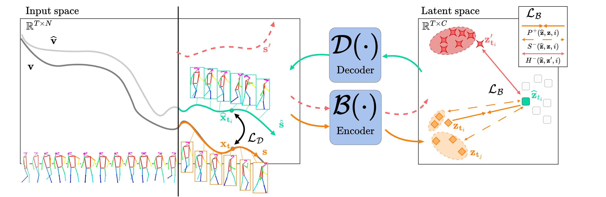

Holistic Representation Learning for Multitask Trajectory Anomaly Detection
WACV 2024
-
Vrije Universiteit Brussel & imec

Abstract
Video anomaly detection deals with the recognition of abnormal events in videos. Apart from the visual signal, video anomaly detection has also been addressed with the use of skeleton sequences. We propose a holistic representation of skeleton trajectories to learn expected motions across segments at different times. Our approach uses multitask learning to reconstruct any continuous unobserved temporal segment of the trajectory allowing the extrapolation of past or future segments and the interpolation of in-between segments. We use an end-to-end attention-based encoder-decoder. We encode temporally occluded trajectories, jointly learn latent representations of the occluded segments, and reconstruct trajectories based on expected motions across different temporal segments. Extensive experiments on three trajectory-based video anomaly detection datasets show the advantages and effectiveness of our approach with state-of-the-art results on anomaly detection in skeleton trajectories
Video overview
Method
The entire trajectory \( \mathbf{v} \) is encoded into representation \( \mathbf{z} \). Each point \( \mathbf{z}_{t_i} \) in the latent space corresponds to a spatial point at time \( t_i \in \mathbf{t} \). We want to approximate occluded segment \( \mathbf{s} \) from only \( \mathbf{v} \setminus \mathbf{s} = \{\mathbf{x}: \mathbf{x}\in \mathbf{v} \; \text{and} \; \mathbf{x} \notin \mathbf{s}\} \). Encoder \( \mathcal{B} \) encodes each point \( \mathbf{x} \) at \( t_i \) into the latent space \( \mathcal{B}(\{\mathbf{x};\mathbf{v} \setminus \mathbf{s}\}) \). The latent representations are then combined with a learned tensor to form an estimated latent trajectory. Decoder \( \mathcal{D} \) then decodes each representation at temporal point \( t_i \) back to the input space and obtain point \( \widehat{\mathbf{x}} \).
Multitask Holistic Trajectories
Jointly learning multiple trajectory segments allows to both distinguish anomalies that may occur at different times as well as learn a high-level understanding of the global trajectory. Given partial trajectory \( \mathbf{v} \setminus \mathbf{s} \) we predict occluded segments \( \mathbf{s} = \{\mathbf{x}_{t_i}: t_i \in \widehat{\mathbf{t}}\} \) for three tasks.
Predicting the future given the past (Ftr) Future segments over \( \widehat{\mathbf{t}} = \{ T_{Ftr},...,T \} \) are estimated from partial trajectory \( \mathbf{v} \setminus \mathbf{s} \) composed of only past segments.
Predicting the past given the future (Pst) Past segments over \( \widehat{\mathbf{t}} = \{ 1,...,T_{Pst}\} \) are estimated from partial trajectory \( \mathbf{v} \setminus \mathbf{s} \) of only future segments.
Predicting the present given both past and future (Prs) Present segments. In-between segments over \( \widehat{\mathbf{t}} = \{ T_{Pst}+1,...,T_{Ftr}-1 \} \), are referred to as present segments and estimated from partial trajectory \( \mathbf{v} \setminus \mathbf{s} \) composed of both past and future segments.
We explore these tasks jointly in a multitask training scheme.
Latent Representation Leaning
Encoder \( \mathcal{B} \) is applied only on the un-occluded part of trajectories \( \mathbf{v} \setminus \mathbf{s} \). A learnable tensor \( \mathbf{u} = \{ \widehat{\mathbf{z}}_{t_i} : t_i \in \mathbf{t} \} \) of equal size as the full trajectory's representations \( |\mathbf{u}| = |\mathcal{B}(\mathbf{v})| \) is also defined. For each task, we select segment \( \mathbf{u}_s = \{ \widehat{\mathbf{z}}_{t_i} : t_i \in \widehat{\mathbf{t}} \} \) corresponding to the occluded \( \mathbf{s} \) in \( \mathbf{v} \). Tensor segment \( \mathbf{u}_s \) is combined with the observed trajectory latents: $$ \mathbf{a} = \Phi(\mathcal{B}(\{\mathbf{x};\mathbf{v} \setminus \mathbf{s}\}) \cup \textbf{u}_{s}) $$ where \( \Phi \) is a function that reorders \( \mathcal{B}(\{\mathbf{x};\mathbf{v} \setminus \mathbf{s}\}) \cup \textbf{u}_{s} \). To draw each of the learned vectors \( \widehat{\mathbf{z}}_{t_i} \in \mathbf{u}_s \) closer to the corresponding trajectory representations \( \mathbf{z}_{t_i} \in \mathcal{B}(\mathbf{v}) \) we define an objective based on latent space positive and negative pairs.
Positive pairs. Minimize the distance between learned vector \( \widehat{\mathbf{z}}_{t_i} \) and the trajectory representation \( \mathbf{z}_{t_i} \).
Soft negative pairs. Given the remaining representations \( \mathbf{z}_{t_j} \) at temporal locations \( t_j \neq t_i \) we maximize their distance to \( \widehat{\mathbf{z}}_{t_i} \) with respect to their temporal distance.
Hard negative pairs. We select latents of segments \( \mathbf{s}' \) from other trajectories as hard negative pairs and maximize their distance to \( \mathbf{z}_{t_i} \).
Decoder \( \mathcal{D} \) takes \( \mathbf{a} \) and projects it back to the input space. As both ground truth trajectory \( \mathbf{v} \) and estimated \( \widehat{\textbf{v}} = \mathcal{D}(\textbf{a}) \) are available, the decoder is explicitly trained on reconstruction and not extra/interpolation.